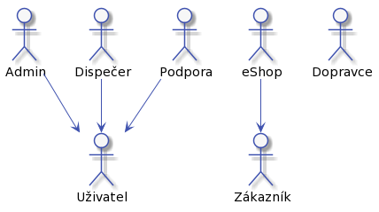
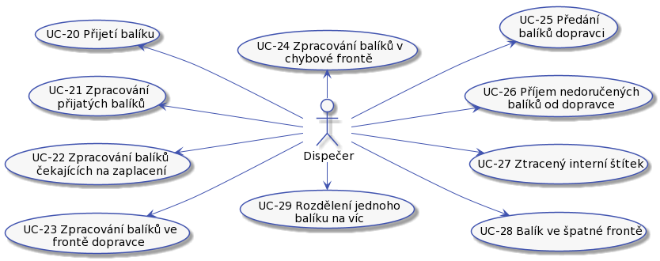
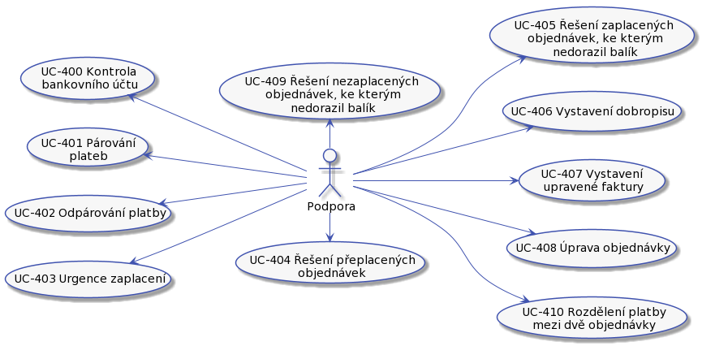

Analýza
Role
Máme tyto role:

Zákazník
Zákazník naší doručovací služby. Může to být fyzická osoba nebo společnost.

Zákaznik můze:
- UC-04 Registrovat balík.
- UC-05 Doručit balík do depa.
- UC-06 Sledovaní balíku.
- UC-07 Zaplatit za doručení.
Uživatel
Představuje někoho, kdo má přístup do systému. Podle své specializace má další možnosti.

Uživatel můze:
- UC-10 - Přihlásit se pomocí jména a hesla.
- UC-11 - Zapomenuté heslo.
- UC-12 - Zapomenutý login.
- UC-13 - Odhlášení ze systému.
Dispečer
Dispečer je pracovník doručovací služby odpovědný za činnosti s balíkem od převzetí balíku od dopravce až po předání dalšímu dopravci.

Dispečer je v depu. Depo bude umístěné tak, aby bylo v dobrém dosahu dopravců. Co dispečer dělá:
- UC-20 - Přijetí balíku.
- UC-21 - Zpracování přijatých balíků.
- UC-22 - Zpracování balíků čekajících na zaplacení.
- UC-23 - Zpracování balíků ve frontě dopravce.
- UC-24 - Zpracování balíků v chybové frontě.
- UC-25 - Předání balíků dopravci.
- UC-26 - Příjem nedoručených balíků od dopravce.
- UC-27 - Ztracený interní štítek.
- UC-28 - Balík ve špatné frontě.
- UC-29 - Rozdělení jednoho balíku na víc.
Pracovník podpory
Pracovník naší doručovací služby. Vyřizuje reklamace, nespárované balíky a pomáhá s procesem doručení balíku.
Pracovník podpory může být fyzicky na centrále. Pracovník podpory je odpovědný za:
Správa uživatelů

- UC-31 - Filtrování uživatelů
- UC-32 - Změna/obnova hesla
- UC-33 - Zapomenuté přihlašovací jméno
- UC-34 - Přidat uživatele
- UC-35 - Zablokovat uživatele
- UC-36 - Upravit uživatele
Práce s platbou a daňovým dokladem

- UC-400 - Kontrola bankovního účtu.
- UC-401 - Párování plateb.
- UC-402 - Odpárování platby.
- UC-403 - Urgence zaplacení.
- UC-404 - Řešení přeplacených objednávek.
- UC-405 - Řešení zaplacených objednávek, ke kterým nedorazil balík.
- UC-406 - Vystavení dobropisu.
- UC-407 - Vystavení upravené faktury.
- UC-408 - Úprava objednávky.
- UC-409 - Řešení nezaplacených objednávek, ke kterým nedorazil balík.
- UC-410 - Rozdělení platby mezi dvě objednávky.
Správa objednávek a balíků

- UC-50 - Storno objednávky.
- UC-51 - Změna doručovací adresy.
- UC-52 - Spárování dvou balíků.
- UC-53 - Označení objednávky za zaplacenou.
- UC-54 - Reklamace.
- UC-55 - Řešení chybové fronty.
- UC-56 - Řešení poškozeného balíku.
- UC-57 - Zaznamenání doručení balíku.
- UC-58 - Přidat záznam do kontaktní historie.
- UC-59 - Ověření identity zákazníka.
- UC-60 - Likvidace balíku.
- UC-61 - Odeslat balík na zpáteční adresu zákazníka.
- UC-62 - Přijetí emailu nebo telefonu od zákazníka.
- UC-63 - Vyhledání objednávky.
- UC-64 - Vyhledání balíku podle objednávky.
- UC-65 - Poslat balíku na zpáteční adresu.
Admin
Pracovník doručovací služby, který dohlíží na fungovaní systému.

Co může dělat admin:
- UC-70 - Zkontrolovat objednávky
eShop
Zákazník, který má možnost zadávat hromadné posílaní balíků.

eShop může:
- UC-90 - Hromadná registrace balíků